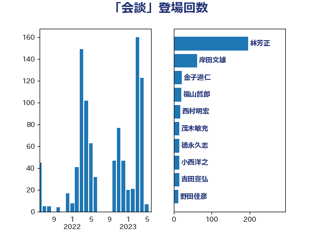

単語「会談」

| 茂木敏充 | 自由民主党 | 182 回 |
| 林芳正 | 自由民主党 | 79 回 |
| 菅義偉 | 自由民主党 | 74 回 |
| 岸信夫 | 自由民主党 | 36 回 |
| 岸田文雄 | 自由民主党 | 35 回 |
| 穀田恵二 | 日本共産党 | 22 回 |
| 小西洋之 | 立憲民主党 | 17 回 |
| 橋本聖子 | 無所属 | 17 回 |
| 佐藤茂樹 | 公明党 | 14 回 |
| 小泉進次郎 | 自由民主党 | 14 回 |
| 野田佳彦 | 立憲民主党 | 14 回 |
| 伊波洋一 | 無所属 | 13 回 |
| 緑川貴士 | 立憲民主党 | 12 回 |
| 大塚耕平 | 国民民主党 | 11 回 |
| 岡田克也 | 立憲民主党 | 11 回 |
| 福山哲郎 | 立憲民主党 | 11 回 |
| 玄葉光一郎 | 立憲民主党 | 10 回 |
| 小田原潔 | 自由民主党 | 9 回 |
| 山田宏 | 自由民主党 | 9 回 |
| 渡辺周 | 立憲民主党 | 9 回 |
| 笠井亮 | 日本共産党 | 9 回 |
| 鬼木誠 | 立憲民主党 | 9 回 |
| 北村経夫 | 自由民主党 | 8 回 |
| 鈴木俊一 | 自由民主党 | 8 回 |
| 田島麻衣子 | 立憲民主党 | 7 回 |
| 三浦信祐 | 公明党 | 6 回 |
| 古賀之士 | 立憲民主党 | 6 回 |
| 江田憲司 | 立憲民主党 | 6 回 |
| 泉健太 | 立憲民主党 | 6 回 |
| 西銘恒三郎 | 自由民主党 | 6 回 |
| 高橋光男 | 公明党 | 6 回 |
| 大家敏志 | 自由民主党 | 5 回 |
| 松野博一 | 自由民主党 | 5 回 |
| 竹内真二 | 公明党 | 5 回 |
| 萩生田光一 | 自由民主党 | 5 回 |
| 金子恵美 | 立憲民主党 | 5 回 |
| 麻生太郎 | 自由民主党 | 5 回 |
| 上川陽子 | 自由民主党 | 4 回 |
| 井上哲士 | 日本共産党 | 4 回 |
| 大西健介 | 立憲民主党 | 4 回 |
| 小熊慎司 | 立憲民主党 | 4 回 |
| 浅田均 | 日本維新の会 | 4 回 |
| 石川博崇 | 公明党 | 4 回 |
| 紙智子 | 日本共産党 | 4 回 |
| 羽田次郎 | 立憲民主党 | 4 回 |
| 舩後靖彦 | れいわ新選組 | 4 回 |
| 鈴木貴子 | 自由民主党 | 4 回 |
| 鷲尾英一郎 | 自由民主党 | 4 回 |
| 中西祐介 | 自由民主党 | 3 回 |
| 中谷真一 | 自由民主党 | 3 回 |
| 吉田統彦 | 立憲民主党 | 3 回 |
| 和田有一朗 | 日本維新の会 | 3 回 |
| 山井和則 | 立憲民主党 | 3 回 |
| 岩渕友 | 日本共産党 | 3 回 |
| 徳永久志 | 立憲民主党 | 3 回 |
| 杉田水脈 | 自由民主党 | 3 回 |
| 榛葉賀津也 | 国民民主党 | 3 回 |
| 田中健 | 国民民主党 | 3 回 |
| 篠原豪 | 立憲民主党 | 3 回 |
| 芳賀道也 | 国民民主党 | 3 回 |
| 鈴木宗男 | 日本維新の会 | 3 回 |
| 青山大人 | 立憲民主党 | 3 回 |
| 高木かおり | 日本維新の会 | 3 回 |
| 三木亨 | 自由民主党 | 2 回 |
| 世耕弘成 | 自由民主党 | 2 回 |
| 中曽根康隆 | 自由民主党 | 2 回 |
| 丸川珠代 | 自由民主党 | 2 回 |
| 伊佐進一 | 公明党 | 2 回 |
| 加藤勝信 | 自由民主党 | 2 回 |
| 古屋範子 | 公明党 | 2 回 |
| 吉田とも代 | 日本維新の会 | 2 回 |
| 城内実 | 自由民主党 | 2 回 |
| 太栄志 | 立憲民主党 | 2 回 |
| 安達澄 | 無所属 | 2 回 |
| 小野寺五典 | 自由民主党 | 2 回 |
| 山口壯 | 自由民主党 | 2 回 |
| 山口那津男 | 公明党 | 2 回 |
| 山崎誠 | 立憲民主党 | 2 回 |
| 山本剛正 | 日本維新の会 | 2 回 |
| 山添拓 | 日本共産党 | 2 回 |
| 平木大作 | 公明党 | 2 回 |
| 末松義規 | 立憲民主党 | 2 回 |
| 松原仁 | 立憲民主党 | 2 回 |
| 松山政司 | 自由民主党 | 2 回 |
| 柴山昌彦 | 自由民主党 | 2 回 |
| 柴田巧 | 日本維新の会 | 2 回 |
| 森まさこ | 自由民主党 | 2 回 |
| 櫻井周 | 立憲民主党 | 2 回 |
| 沢田良 | 日本維新の会 | 2 回 |
| 津島淳 | 自由民主党 | 2 回 |
| 浜地雅一 | 公明党 | 2 回 |
| 清水貴之 | 日本維新の会 | 2 回 |
| 田嶋要 | 立憲民主党 | 2 回 |
| 石井啓一 | 公明党 | 2 回 |
| 石井章 | 日本維新の会 | 2 回 |
| 石破茂 | 自由民主党 | 2 回 |
| 笠浩史 | 無所属 | 2 回 |
| 舞立昇治 | 自由民主党 | 2 回 |
| 西村康稔 | 自由民主党 | 2 回 |
| 赤嶺政賢 | 日本共産党 | 2 回 |
| 赤羽一嘉 | 公明党 | 2 回 |
| 道下大樹 | 立憲民主党 | 2 回 |
| 重徳和彦 | 立憲民主党 | 2 回 |
| 野上浩太郎 | 自由民主党 | 2 回 |
| 野間健 | 立憲民主党 | 2 回 |
| 青柳仁士 | 日本維新の会 | 2 回 |
| 高橋千鶴子 | 日本共産党 | 2 回 |
| 上杉謙太郎 | 自由民主党 | 1 回 |
| 上田清司 | 国民民主党 | 1 回 |
| 下村博文 | 自由民主党 | 1 回 |
| 中根一幸 | 自由民主党 | 1 回 |
| 二階俊博 | 自由民主党 | 1 回 |
| 井上信治 | 自由民主党 | 1 回 |
| 井坂信彦 | 立憲民主党 | 1 回 |
| 佐藤啓 | 自由民主党 | 1 回 |
| 佐藤正久 | 自由民主党 | 1 回 |
| 勝部賢志 | 立憲民主党 | 1 回 |
| 古川禎久 | 自由民主党 | 1 回 |
| 吉川ゆうみ | 自由民主党 | 1 回 |
| 吉良州司 | 無所属 | 1 回 |
| 國場幸之助 | 自由民主党 | 1 回 |
| 土屋品子 | 自由民主党 | 1 回 |
| 坂井学 | 自由民主党 | 1 回 |
| 大野泰正 | 自由民主党 | 1 回 |
| 宮崎政久 | 自由民主党 | 1 回 |
| 小池晃 | 日本共産党 | 1 回 |
| 山下芳生 | 日本共産党 | 1 回 |
| 山下雄平 | 自由民主党 | 1 回 |
| 山口晋 | 自由民主党 | 1 回 |
| 山谷えり子 | 自由民主党 | 1 回 |
| 岡本あき子 | 立憲民主党 | 1 回 |
| 岩谷良平 | 日本維新の会 | 1 回 |
| 川合孝典 | 国民民主党 | 1 回 |
| 市村浩一郎 | 日本維新の会 | 1 回 |
| 後藤祐一 | 立憲民主党 | 1 回 |
| 後藤茂之 | 自由民主党 | 1 回 |
| 御法川信英 | 自由民主党 | 1 回 |
| 新藤義孝 | 自由民主党 | 1 回 |
| 木原誠二 | 自由民主党 | 1 回 |
| 本村伸子 | 日本共産党 | 1 回 |
| 杉尾秀哉 | 立憲民主党 | 1 回 |
| 村井英樹 | 自由民主党 | 1 回 |
| 松川るい | 自由民主党 | 1 回 |
| 枝野幸男 | 立憲民主党 | 1 回 |
| 柚木道義 | 立憲民主党 | 1 回 |
| 森山浩行 | 立憲民主党 | 1 回 |
| 武部新 | 自由民主党 | 1 回 |
| 池下卓 | 日本維新の会 | 1 回 |
| 河西宏一 | 公明党 | 1 回 |
| 河野太郎 | 自由民主党 | 1 回 |
| 河野義博 | 公明党 | 1 回 |
| 浅川義治 | 日本維新の会 | 1 回 |
| 清水真人 | 自由民主党 | 1 回 |
| 渡辺猛之 | 自由民主党 | 1 回 |
| 滝波宏文 | 自由民主党 | 1 回 |
| 熊谷裕人 | 立憲民主党 | 1 回 |
| 猪口邦子 | 自由民主党 | 1 回 |
| 田名部匡代 | 立憲民主党 | 1 回 |
| 田村憲久 | 自由民主党 | 1 回 |
| 盛山正仁 | 自由民主党 | 1 回 |
| 矢倉克夫 | 公明党 | 1 回 |
| 石井浩郎 | 自由民主党 | 1 回 |
| 竹内譲 | 公明党 | 1 回 |
| 細野豪志 | 自由民主党 | 1 回 |
| 緒方林太郎 | 無所属 | 1 回 |
| 美延映夫 | 日本維新の会 | 1 回 |
| 菅直人 | 立憲民主党 | 1 回 |
| 薗浦健太郎 | 自由民主党 | 1 回 |
| 藤巻健太 | 日本維新の会 | 1 回 |
| 西村智奈美 | 立憲民主党 | 1 回 |
| 西田実仁 | 公明党 | 1 回 |
| 谷合正明 | 公明党 | 1 回 |
| 谷川とむ | 自由民主党 | 1 回 |
| 足立康史 | 日本維新の会 | 1 回 |
| 進藤金日子 | 自由民主党 | 1 回 |
| 金城泰邦 | 公明党 | 1 回 |
| 鈴木敦 | 国民民主党 | 1 回 |
| 鈴木隼人 | 自由民主党 | 1 回 |
| 長浜博行 | 無所属 | 1 回 |
| 青山繁晴 | 自由民主党 | 1 回 |
| 青柳陽一郎 | 立憲民主党 | 1 回 |
| 高市早苗 | 自由民主党 | 1 回 |
| 高鳥修一 | 自由民主党 | 1 回 |